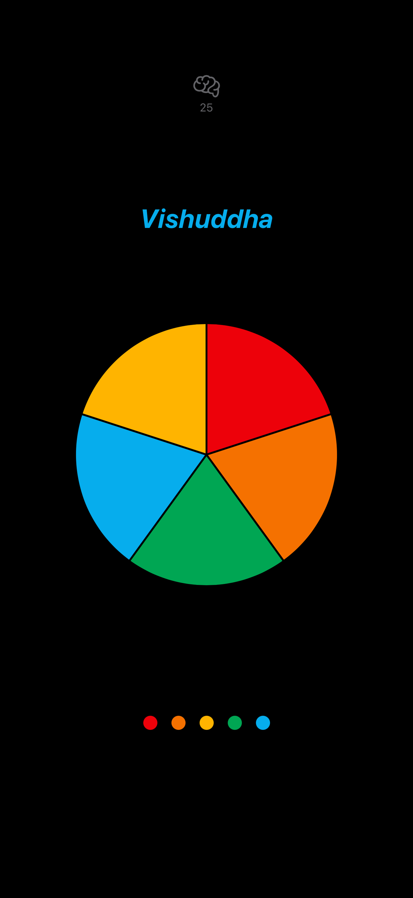
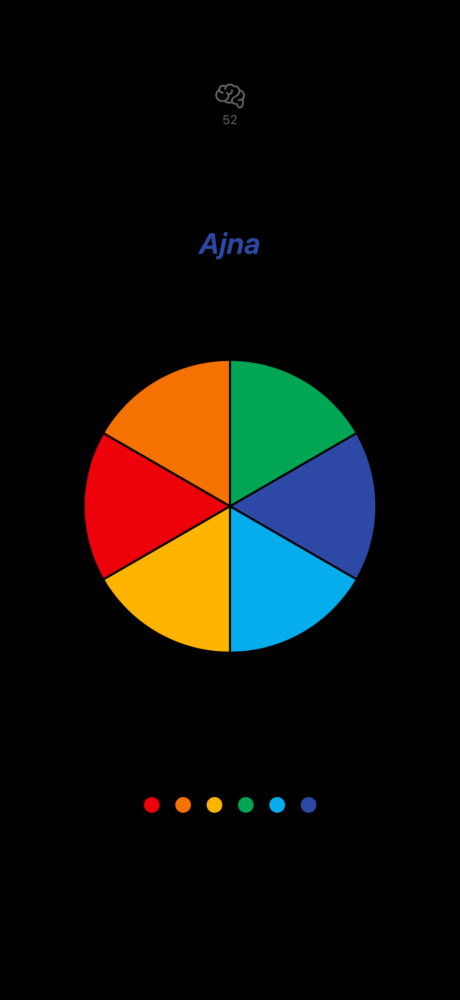

Game Overview
Chakratapa is a mindfulness game designed to develop your intuitive abilities through two engaging modes: Intuition Mode and Memory Mode. Both modes feature 7 levels, each corresponding to one of the seven chakra colors.
Game Preview


How to Play
Intuition Mode- Each level is named after its corresponding Sanskrit chakra name.
- A circle is divided into segments, increasing from 1 segment at Level 1 to 7 segments at Level 7.
- Colors specific to each level are randomly assigned to these segments, and each color appears only once per round.
- The correct chakra color order is not shown. Your goal is to tap the segments in the correct order using your intuition.
- When you tap a segment, its color is revealed. Correctly tapped segments remain colored.
- Haptic feedback is provided for both correct and incorrect taps.
- Tapping an incorrect segment reveals its color and resets the level with new randomly assigned colors.
- Complete the full color sequence to progress to the next level.
- Each level is named after its corresponding Sanskrit chakra name.
- At the start of each level, the correct chakra color sequence is displayed for you to memorize.
- A circle is divided into segments, increasing from 1 segment at Level 1 to 7 segments at Level 7.
- Colors specific to each level are randomly assigned to these segments, and each color appears only once per round.
- After the sequence is shown, your goal is to tap the segments in the same order from memory.
- When you tap a segment, its color is revealed. Correctly tapped segments remain colored.
- Haptic feedback is provided for both correct and incorrect taps.
- Tapping an incorrect segment reveals its color and resets the level with new randomly assigned colors.
- Complete the full color sequence to progress to the next level.
Chakra Color Sequence
- Red – Muladhara (Root Chakra)
- Orange – Svadhisthana (Sacral Chakra)
- Yellow – Manipura (Solar Plexus Chakra)
- Green – Anahata (Heart Chakra)
- Blue – Vishuddha (Throat Chakra)
- Indigo – Ajna (Third Eye Chakra)
- Purple – Sahasrara (Crown Chakra)
Level Progression
- Level 1 (Muladhara): A single-segment circle. Tap it to reveal red and complete the level.
- Level 2 (Svadhisthana): The circle splits into two segments. Tap in order: red → orange.
- Level 3 (Manipura): The circle has three segments. Tap in order: red → orange → yellow.
- Level 4 (Anahata): The circle divides into four segments. Tap in order: red → orange → yellow → green.
- Level 5 (Vishuddha): The circle has five segments. Tap in order: red → orange → yellow → green → blue.
- Level 6 (Ajna): The circle has six segments. Tap in order: red → orange → yellow → green → blue → indigo.
- Level 7 (Sahasrara): The final level. Tap in order: red → orange → yellow → green → blue → indigo → purple.
Controls & Navigation
- Tap directly on circle segments to select them.
- Access the main menu at any time by swiping back. Note: swiping back will exit your current game session.
- Use the available buttons in the app interface to view the rules or return to the main menu.
Tips for Success
- Clear your mind before making selections.
- Trust your initial instincts.
- Pay attention to subtle feelings or impressions before tapping.
- Practice mindfulness during gameplay to enhance your intuitive abilities.
Privacy Policy
Chakratapa does not collect, store, or share any personal data from users. The game is completely free to play and does not require registration, login, or the submission of any personal information.
- Data Collection: Chakratapa does not collect, store, or process any personal or usage data.
- Data Usage: No data is used for analytics, advertising, or any other purpose.
- Third-Party Sharing: No data is shared with third parties or external services.
- Cookies and Tracking: Chakratapa does not use cookies or any tracking technologies.
- Children's Privacy: Chakratapa is suitable for all ages and does not knowingly collect any information from children under the age of 13, in compliance with COPPA.
- User Rights: Since no data is collected or stored, users do not need to request access, deletion, or correction of their data. If you have any privacy-related questions, please contact us at support@chakratapa.app.
- Data Retention and Security: No user data is retained or stored, so there are no security risks related to data storage.
- Compliance: Chakratapa complies with all applicable privacy laws and regulations, including GDPR, CCPA, and COPPA.
If our data practices change in the future, we will update this policy and notify users as required.
Contact & Support
For support, feedback, or questions about Chakratapa, please email:
rutobo35@gmail.com
© 2025 Chakratapa. All rights reserved.